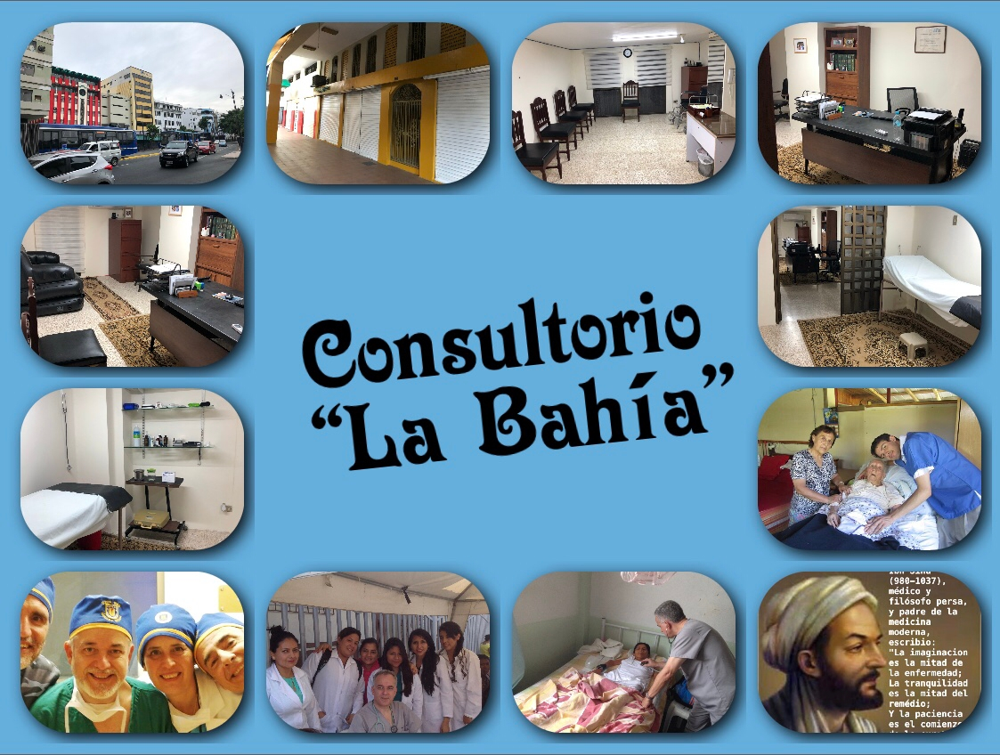
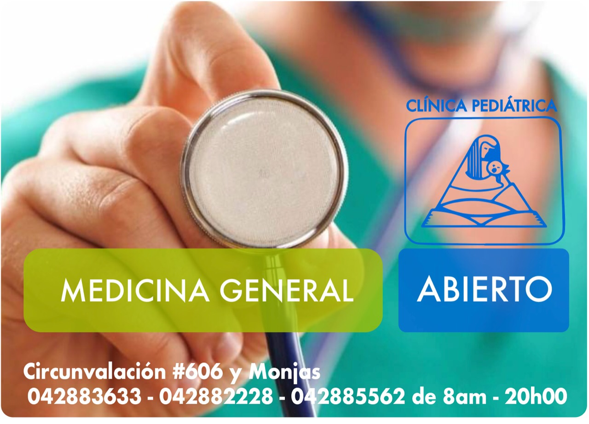

Médico General y Cirujano plástico
Presentación
Soy...
Informacion Personal
Nombre completo: Josué Arturo Valverde Allauca
Fecha de nacimiento: 27 de Marzo de 1960
Estado Civil: Casado
Experiencia Laboral
Educacion
1979-1986 - Médico Cirujano, Universidad de Conception, Chile
1989 - Cirujia General, UDELAR, Montevideo, Uruguay
1990-1992 - Cirujía Plástica, UDELAR, Montevideo, Uruguay
1966-1978 - primaria y Secundaria, Guayaquil, Ecuador
Cursos
Soft Skills
Idiomas
Referencias
Otras Actividades
Hobbies: DeportesTenis de Mesa y Adjedrez.
Lugares de Atécion:
TELEMEDICINA 
La Bahia
Los Ceibos
